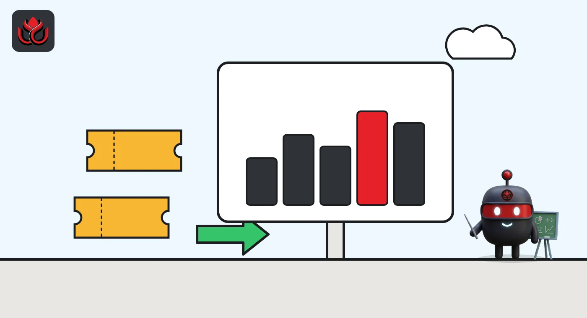
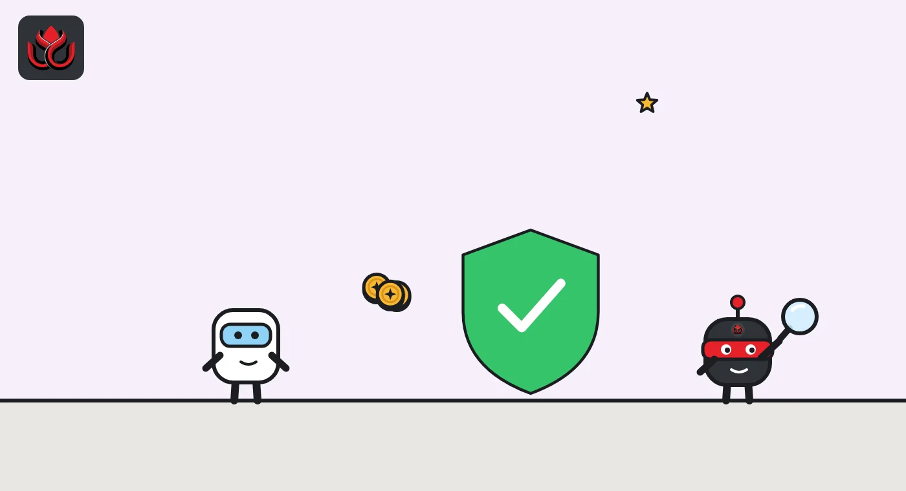

Kalshi signed the NBA and S&P Dow Jones, then capped under-21 deposits at $2,500 a month
In five days, Kalshi became the NBA's preferred prediction market, agreed to build event-contract indexes with S&P Dow Jones Indices, launched sector data contracts and put a monthly deposit cap on its youngest traders. Then it raised $1 billion.
Key points
- On October 26, 2026, Kalshi said it is now a Preferred Prediction Market Exchange of the NBA, with official league data used to settle NBA markets.
- On October 27, Kalshi announced a multi-year deal with S&P Dow Jones Indices to list contracts on the S&P 500 and the Dow and to build indexes made of event contracts.
- The same day, Kalshi set a default $2,500 monthly deposit cap for every trader aged 18 to 20.
Four announcements in five days
Kalshi, the US prediction market regulated by the Commodity Futures Trading Commission (CFTC), runs yes-or-no contracts on real-world events. Each contract pays $1 if the event happens and nothing if it does not. In the last week of October, it made four separate announcements on its own news site, then two days later revealed a $1 billion funding round that LC Insight covered here.
Taken together, the four moves point in two directions at once. Kalshi is trying to look like a mainstream financial exchange, with blue-chip partners and benchmark products. It is also trying to answer critics who say prediction markets are sports betting by another name, with integrity deals and limits on young traders.
The NBA deal
On October 26, Kalshi said it had become a Preferred Prediction Market Exchange of the NBA. Official NBA data, distributed by Sportradar, will be used to run and settle authorized NBA markets on Kalshi. That ties the result of each contract to the league's own record instead of a third-party feed.
The two sides will set up direct channels to share integrity data, report suspicious trading and cooperate on investigations. The agreement also limits which NBA markets are allowed and bars league and team personnel from trading NBA event contracts. Kalshi listed its existing tools: trade surveillance through IC360, abuse monitoring for athletes and coaches through Signify, and nationwide self-exclusion.
Kalshi's post also noted that the NBA signed a memorandum of understanding with the CFTC on information sharing around NBA prediction markets. NBA Commissioner Adam Silver, quoted in the post, said the league has "roughly 40 different jurisdictions regulating us right now." No financial terms were disclosed.

Stock indexes, built from event contracts
A day later, Kalshi announced a multi-year agreement with S&P Dow Jones Indices (S&P DJI). There are two parts. First, Kalshi plans to list contracts on the S&P 500, the Dow Jones Industrial Average and other S&P DJI benchmarks, settled against official S&P DJI values. Second, the partners plan indexes made of Kalshi event contracts, with S&P DJI writing the rules for what goes in and how it changes.
Kalshi floated possible themes such as political power, supply chain risk, AI's effect on jobs, sports and weather. It presented these as possibilities, not announced products, and gave no launch date, contract specs or fees.
That followed an October 23 launch of sector KPI markets settled on data from Carbon Arc. These contracts track industry-wide numbers such as card spending, point-of-sale data, foot traffic and app downloads. Kalshi CEO Tarek Mansour called breaking equities into specific events and KPIs "one of Kalshi's best use cases."
A $2,500 monthly cap for 18- to 20-year-olds
Also on October 27, Kalshi said every account held by an 18- to 20-year-old will default to a $2,500 cap on deposits per month. The other changes, due "in the coming days" with no exact date, are:
- Traders aged 18 to 20 move automatically into special accounts with extra protections and built-in education.
- A new trader with more than $1,000 in their account who puts more than 25% of it into a single trade will see an alert urging them to spread risk.
- Parent guides on prediction markets, written with Parent ProTech and ConnectSafely.
Kalshi says it rejects anyone under 18 through identity checks and has moved its ID Check tool, which lets adults confirm nobody else is using their identity, to the homepage. Co-founder and COO Luana Lopes Lara said the platform is "available only to traders 18 and older."

Timeline
Kalshi launches sector KPI markets settled on Carbon Arc data
Kalshi becomes a Preferred Prediction Market Exchange of the NBA
Multi-year deal with S&P Dow Jones Indices announced
Default $2,500 monthly deposit cap for traders aged 18 to 20
Kalshi raises $1 billion at a $40 billion valuation
What Kalshi did not say
None of the four posts gave money terms, volumes for the new products or launch dates for the S&P contracts and indexes. In its funding post two days later, Kalshi said it has more than 30 million accounts and handles over 75% of prediction market trading volume, figures that are its own and that Kalshi did not back with outside data. The CFTC is also in court with states over who gets to regulate these markets, as in its lawsuit against Utah.
LC Insight analysis
This section is our reading of the facts above, not a statement of fact.
- We think the NBA and S&P deals matter more for Kalshi's legal fight than for its revenue. A league that settles markets on its own data and shares integrity alerts is a strong exhibit when states argue that event contracts are unregulated gambling.
- The $2,500 cap is a default, not a hard ceiling in the post, and Kalshi did not say whether users can raise it. The likely test is whether regulators and parents see it as enough, now that Kalshi is pushing deeper into sports with the NBA deal.
- Index products built from event contracts are the newest idea here. If S&P DJI puts its name on them, they could become inputs for funds and hedges, but nothing is scheduled yet.
What's next
- The rollout date for the under-21 accounts and trade alerts
- First S&P 500 and Dow contracts listed on Kalshi, and their specs
- Whether other leagues sign similar data and integrity deals
- State court rulings on CFTC-regulated sports contracts
Disclaimer. This article is based on public information and the sources listed below as of the update time shown. It is for information only and is not investment, legal or tax advice. Figures may change as companies and authorities publish new data.
Sources
- Kalshi News, Kalshi and the NBA are partnering (October 26, 2026)
- Kalshi News, S&P Dow Jones Indices and Kalshi are joining forces (October 27, 2026)
- Kalshi News, Kalshi expands protections for 18 to 20 year old traders (October 27, 2026)
- Kalshi News, Announcing sector KPI markets with Carbon Arc (October 23, 2026)
- Kalshi News, Kalshi raises $1 billion at a $40 billion valuation (October 29, 2026)